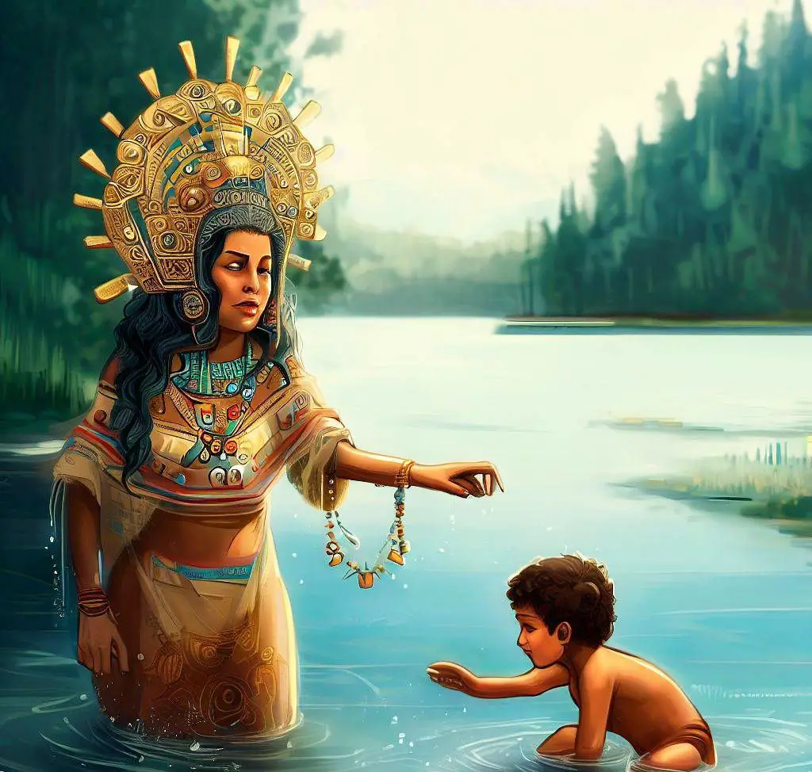
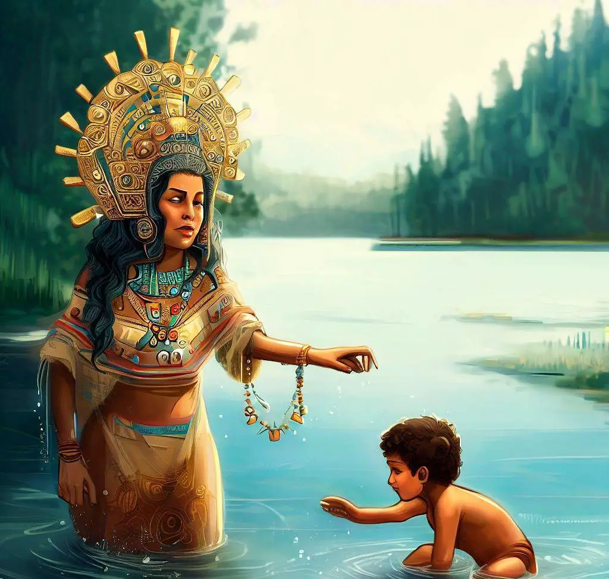

Bachué: Origen, Naturaleza y Comunidad en la Mitología Colombiana
La legendaria Bachué emerge de las aguas para dar origen a una historia de conexión con la naturaleza y valores comunitarios.
¿Que trata?
Hace mucho tiempo, en las tierras de Colombia, en la región de Boyacá, existía una laguna misteriosa llamada Iguaque. En sus profundidades, se dice que vivía una mujer extraordinaria llamada Bachué.
Una noche, bajo la luz de la luna, Bachué emergió de las aguas cristalinas de la laguna, llevando en sus brazos a un niño. Era su hijo, fruto de su unión con el dios de la luna. Juntos, Bachué y su hijo, crearon la humanidad muisca, poblaron la tierra y enseñaron a sus descendientes los secretos de la naturaleza y el respeto por los dioses. Con el tiempo, el hijo de Bachué creció y se convirtió en su esposo. Como madre y esposa, Bachué guió a su pueblo, compartiendo su sabiduría y amor por la tierra. Su historia es un recordatorio de la conexión profunda entre la humanidad y la naturaleza, y de la importancia de la familia y la comunidad en la vida de los pueblos indígenas de Colombia.

Significado y Simbolismo
La legendaria Bachué emerge de las aguas para dar origen a una historia de conexión con la naturaleza y valores comunitarios.
¿Que trata?
Hace mucho tiempo, en las tierras de Colombia, en la región de Boyacá, existía una laguna misteriosa llamada Iguaque. En sus profundidades, se dice que vivía una mujer extraordinaria llamada Bachué.
Una noche, bajo la luz de la luna, Bachué emergió de las aguas cristalinas de la laguna, llevando en sus brazos a un niño. Era su hijo, fruto de su unión con el dios de la luna. Juntos, Bachué y su hijo, crearon la humanidad muisca, poblaron la tierra y enseñaron a sus descendientes los secretos de la naturaleza y el respeto por los dioses. Con el tiempo, el hijo de Bachué creció y se convirtió en su esposo. Como madre y esposa, Bachué guió a su pueblo, compartiendo su sabiduría y amor por la tierra. Su historia es un recordatorio de la conexión profunda entre la humanidad y la naturaleza, y de la importancia de la familia y la comunidad en la vida de los pueblos indígenas de Colombia.

Significado y Simbolismo
- Conexión con la naturaleza: La emergencia de Bachué de las aguas de la laguna de Iguaque y su posterior conexión con la tierra y la naturaleza enfatizan la relación sagrada que los indígenas colombianos tienen con su entorno. Bachué es vista como una entidad que encarna la fertilidad de la tierra y la vida misma.
- Valores familiares y comunitarios: Bachué y su hijo-esposo no solo son los progenitores de la humanidad muisca, sino que también representan la importancia de la familia y la comunidad en la cultura indígena colombiana. Su historia enfatiza la unidad familiar y la colaboración comunitaria como fundamentos para la supervivencia y el bienestar de la sociedad.
- Respeto por los ciclos de la vida: La historia de Bachué también enseña la importancia de respetar los ciclos naturales de la vida, incluido el ciclo de nacimiento, crecimiento, reproducción y muerte. Su unión con su hijo, que luego se convierte en su esposo, puede interpretarse como una representación simbólica de la continuidad de la vida y el ciclo infinito de la existencia.